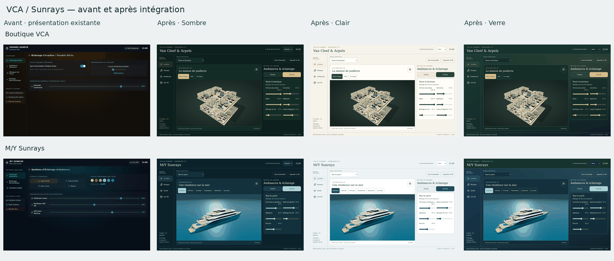

Avant : composants du commit initial 3a64d146, présentation fixe d’origine. Après : GUI intégrant les modèles approuvés, Sombre, Clair et Verre. Les formats téléphone sont présentés dans les captures séparées. Le thème Verre comporte des panneaux translucides. Comparaison issue des captures de navigateur, sans génération d’images.
